صفحة 16 كلمة · نسبة التشكيل 0.60
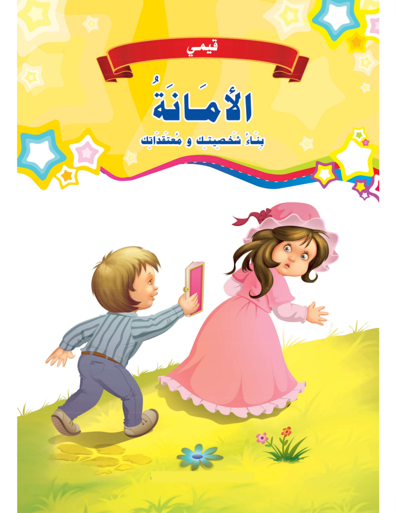
قيمي الأَمَانَةُ بِنَاءُ شَخْصِيَتِك و مُعْتَقَدَاتِك
صفحة 2178 كلمة · نسبة التشكيل 0.06
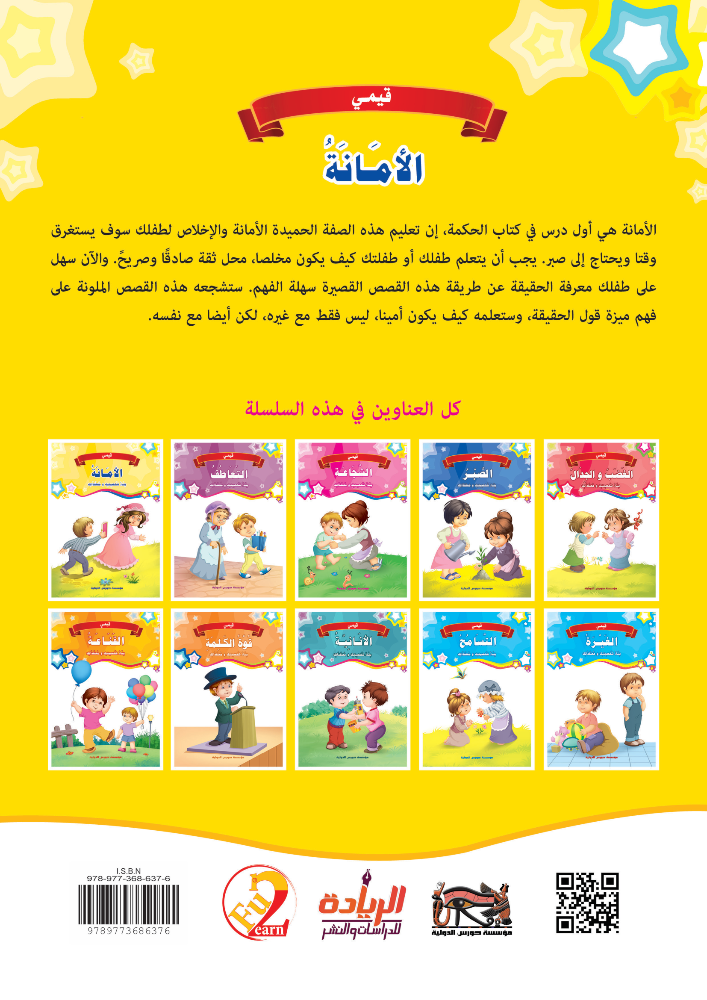
قيمي الأَمَانَةُ الأمانة هي أول درس في كتاب الحكمة، إن تعليم هذه الصفة الحميدة الأمانة والإخلاص لطفلك سوف يستغرق وقتا ويحتاج إلى صبر. يجب أن يتعلم طفلك أو طفلتك كيف يكون مخلصا، محل ثقة صادقًا وصريحٌ. والآن سهل على طفلك معرفة الحقيقة عن طريقة هذه القصص القصيرة سهلة الفهم. ستشجعه هذه القصص الملونة على فهم ميزة قول الحقيقة، وستعلمه كيف يكون أمينا، ليس فقط مع غيره، لكن أيضا مع نفسه. كل العناوين في هذه السلسلة قيمي الأَمَانَةُ بناء شخصيتك و معتقداتك مؤسسة حورس الدولية قيمي التعاطف بناء شخصيتك و معتقداتك مؤسسة حورس الدولية قيمي الشَّجَاعَة بناء شخصيتك و معتقداتك مؤسسة حورس الدولية قيمي الصَّبْرُ بناء شخصيتك و معتقداتك مؤسسة حورس الدولية قيمي الغَضَبُ والجدالُ بناء شخصيتك و معتقداتك مؤسسة حورس الدولية قيمي القَنَاعَةُ بناء شخصيتك و معتقداتك مؤسسة حورس الدولية قيمي قُوَّةُ الكَلِمَةِ بناء شخصيتك و معتقداتك مؤسسة حورس الدولية قيمي الأنَانِيَّةُ بناء شخصيتك و معتقداتك مؤسسة حورس الدولية قيمي التَّسَامُحُ بناء شخصيتك و معتقداتك مؤسسة حورس الدولية قيمي الغَيْرَةُ بناء شخصيتك و معتقداتك مؤسسة حورس الدولية I.S.B.N 978-977-368-637-6 9789773686376 Fu2 earn الريادة للدراسات والنشر مؤسسة حورس الدولية
صفحة 3107 كلمة · نسبة التشكيل 0.22
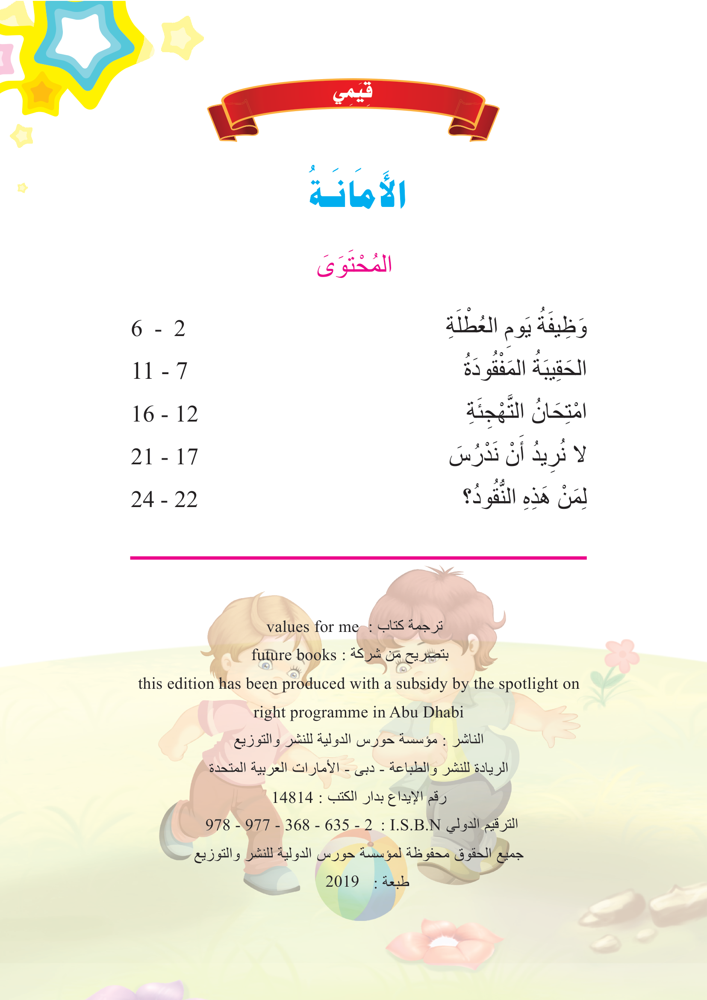
قِيَمِي الأَمَانَةُ المُحْتَوَى 6 - 2 وَظِيفَةُ يَومِ العُطْلَةِ 11 - 7 الحَقِيبَةُ المَفْقُودَةُ 16 - 12 امْتِحَانُ التَّهْجِئَةِ 21 - 17 لا نُرِيدُ أَنْ نَدْرُسَ 24 - 22 لِمَنْ هَذِهِ النُّقُودُ؟ ترجمة كتاب : values for me بتصريح من شركة : future books this edition has been produced with a subsidy by the spotlight on right programme in Abu Dhabi الناشر : مؤسسة حورس الدولية للنشر والتوزيع الريادة للنشر والطباعة - دبي - الأمارات العربية المتحدة رقم الإيداع بدار الكتب : 14814 الترقيم الدولي I.S.B.N : 2 - 635 - 368 - 977 - 978 جميع الحقوق محفوظة لمؤسسة حورس الدولية للنشر والتوزيع طبعة : 2019
صفحة 436 كلمة · نسبة التشكيل 0.78 · تشكيل 96.1%
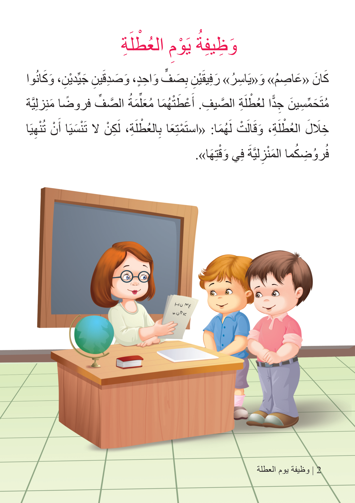
وَظِيفَةُ يَوْمِ العُطْلَةِ كَانَ «عَاصِمٌ» وَ«يَاسِرٌ» رَفِيقَيْنِ بِصَفٍّ وَاحِدٍ، وَصَدَقَينِ جَيِّدَيْنِ، وَكَانُوا مُتَحَمِّسِينَ جدًّا لِعُطْلَةِ الصَّيفِ. أَعْطَتْهُمَا مُعَلِّمَةُ الصَّفِّ فروضًا مَنزِلِيَّة خِلَالَ العُطْلَةِ، وَقَالَتْ لَهُمَا: «استَمْتِعَا بِالعُطْلَةِ، لَكِنْ لا تَنْسَيَا أَنْ تُنْهِيَا فُرُوضَكُما المَنْزِلِيَّةَ فِي وَقْتِهَا».
صفحة 528 كلمة · نسبة التشكيل 0.76 · تشكيل 95.9%
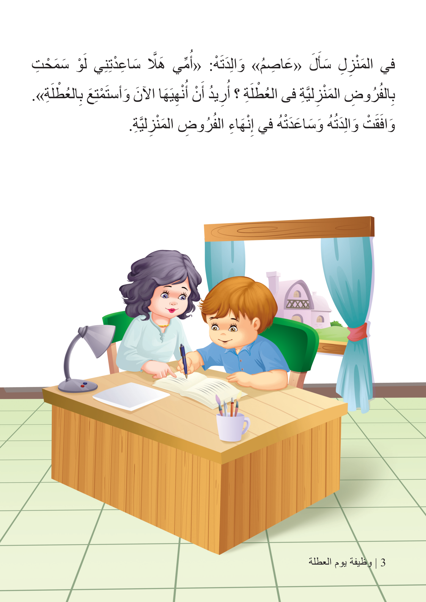
فِي المَنْزِلِ سَأَلَ «عَاصِمٌ» وَالِدَتَهُ: «أُمِّي هَلَّا سَاعَدْتِنِي لَوْ سَمَحْتِ بِالفُرُوضِ المَنْزِلِيَّةِ في العُطْلَةِ ؟ أُرِيدُ أَنْ أُنْهِيَهَا الآنَ وَأَسْتَمْتِعَ بِالعُطْلَةِ». وَافَقَتْ وَالِدَتُهُ وَسَاعَدَتْهُ في إِنْهَاءِ الفُرُوضِ المَنْزِلِيَّةِ.
صفحة 625 كلمة · نسبة التشكيل 0.69
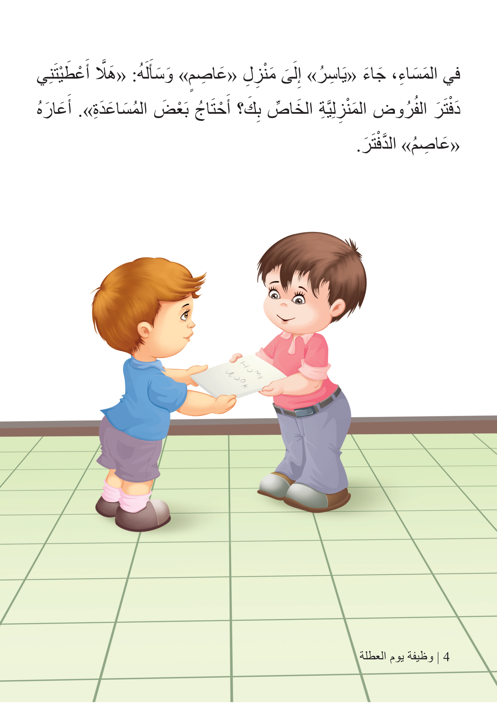
فِي المَسَاءِ، جَاءَ «يَاسِرُ» إِلَىَ مَنْزِلِ «عَاصِمٍ» وَسَأَلَهُ: «هَلَّا أَعْطَيْتَنِي دَفْتَرَ الفُرُوضِ المَنْزِلِيَّةِ الخَاصَّ بِكَ؟ أَحْتَاجُ بَعْضَ المُسَاعَدَةِ». أَعَارَهُ «عَاصِمٌ» الدَّفْتَرَ. | وظيفة يوم العطلة
صفحة 740 كلمة · نسبة التشكيل 0.81
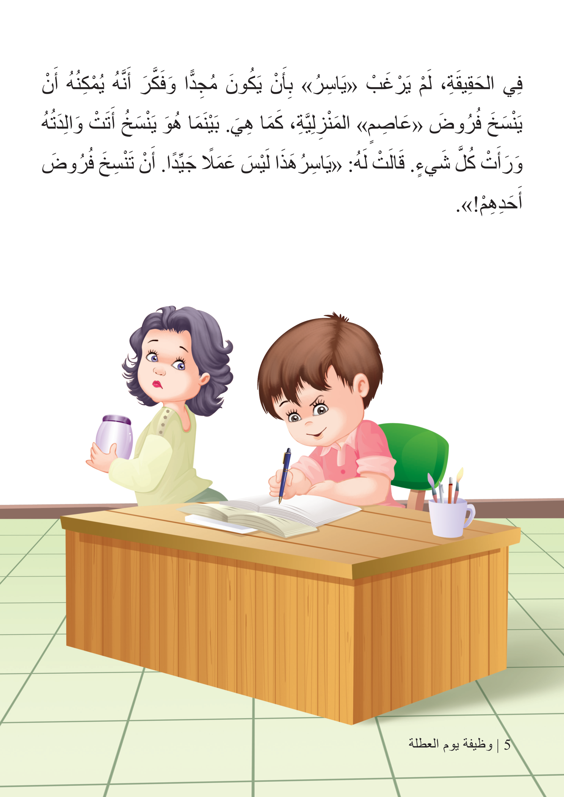
فِي الحَقِيقَةِ، لَمْ يَرْغَبْ «يَاسِرُ» بِأَنْ يَكُونَ مُجِدًّا وَفَكَّرَ أَنَّهُ يُمْكِنُهُ أَنْ يَنْسَخَ فُرُوضَ «عَاصِم» المَنْزِلِيَّةَ، كَمَا هِيَ. بَيْنَمَا هُوَ يَنْسَخُ أَتَتْ وَالِدَتُهُ وَرَأَتْ كُلَّ شَيْءٍ. قَالَتْ لَهُ: «يَاسِرُ هَذَا لَيْسَ عَمَلًا جَيِّدًا. أَنْ تَنْسَخَ فُرُوضَ أَحَدِهِمْ!». وظيفة يوم العطلة
صفحة 841 كلمة · نسبة التشكيل 0.83
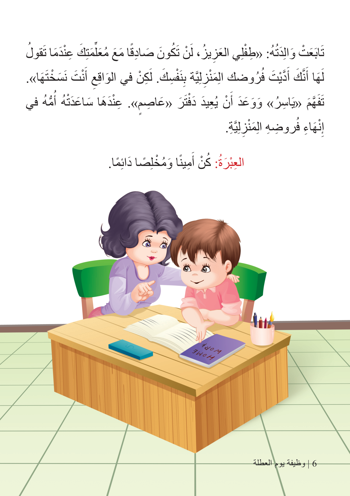
تَابَعَتْ وَالِدَتُهُ طِفْلِي العَزِيزُ لَنْ تَكُونَ صَادِقًا مَعَ مُعَلِّمَتِكَ عِنْدَمَا تَقُولُ لَهَا اَنَّكَ اَدَّيْتَ فُرُوضِكَ المَنْزِلِيَّةِ بِنَفْسِكَ لَكِنْ فِي الوَاقِعِ اَنْتَ نَسَخْتَهَا تَفَهَّمَ يَاسِرُ وَوَعَدَ اَنْ يُعِيدَ دَفْتَرَ عَاصِمٍ عِنْدَهَا سَاعَدَتْهُ اُمُّهُ فِي اِنْهَاءِ فُروضِهِ المَنْزِلِيَّةِ العِبْرَةُ كُنْ اَمِينًا وَمُخْلِصًا دَائِمًا
صفحة 940 كلمة · نسبة التشكيل 0.80
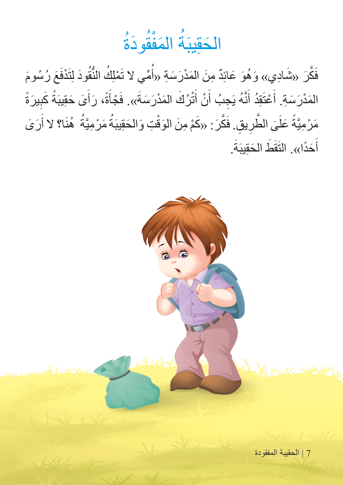
اَلحَقِيبَةُ المَفْقُودَةُ فَكَّرَ «شَادِي» وَهُوَ عَائِدٌ مِنَ المَدْرَسَةِ «أُمِّي لا تَمْلِكُ النُّقُودَ لِتَدْفَعَ رُسُومَ المَدْرَسَةِ. أَعْتَقِدُ أَنَّهُ يَجِبُ أَنْ أَتْرُكَ المَدْرَسَةَ». فَجْأَةً، رَأَى حَقِيبَةً كَبِيرَةً مَرْمِيَّةً عَلَى الطَّرِيقِ. فَكَّرَ: «كَمْ مِنَ الوَقْتِ وَالحَقِيبَةُ مَرْمِيَّةٌ هُنَا؟ لا أَرَى أَحَدًا». التَقَطَ الحَقِيبَةَ.
صفحة 1027 كلمة · نسبة التشكيل 0.74
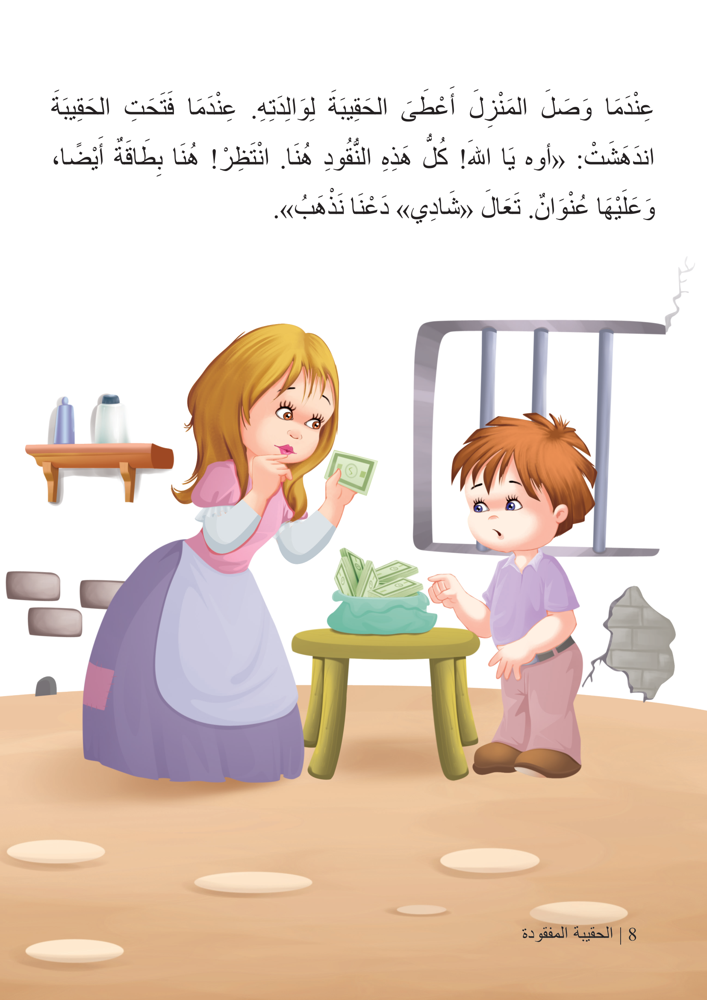
عِنْدَمَا وَصَلَ المَنْزِلَ أَعْطَى الحَقِيبَةَ لِوَالِدَتِهِ. عِنْدَمَا فَتَحَتِ الحَقِيبَةَ انْدَهَشَتْ: «أُوهِ يَا الله! كُلُّ هَذِهِ النُّقُودِ هُنَا. انْتَظِرْ! هُنَا بِطَاقَةٌ أَيْضًا، وَعَلَيْهَا عُنْوَانٌ. تَعَالَ «شَادِي» دَعْنَا نَذْهَبْ».
صفحة 1129 كلمة · نسبة التشكيل 0.75
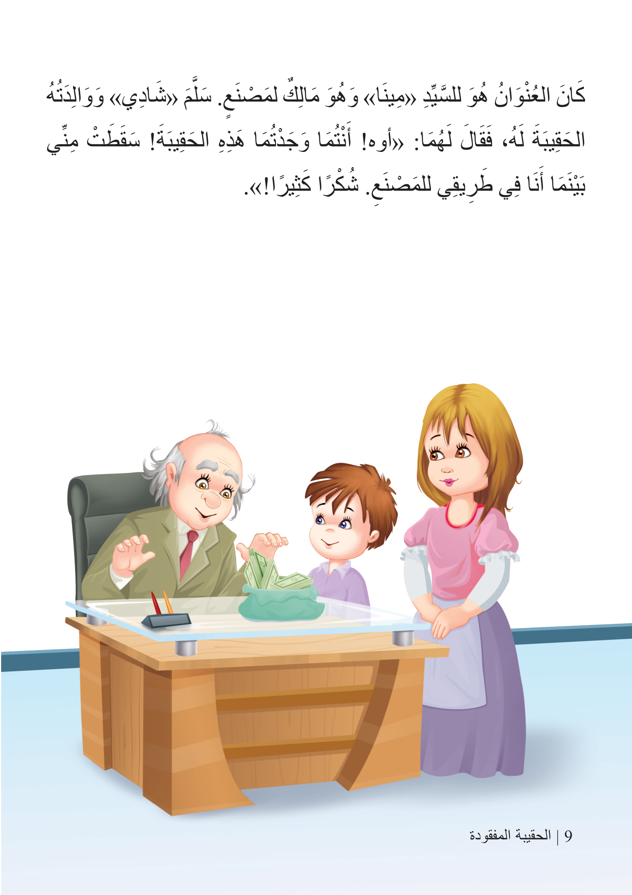
كَانَ الْعُنْوَانُ هُوَ لِلسَّيِّدِ «مِينَا» وَهُوَ مَالِكُ لمَصْنَعٍ. سَلَّمَ «شَادِي» وَوَالِدَتُهُ الحَقِيبَةَ لَهُ، فَقَالَ لَهُمَا: «أوه! أَنْتُمَا وَجَدْتُمَا هَذِهِ الحَقِيبَةَ! سَقَطَتْ مِنِّي بَيْنَمَا أَنَا فِي طَرِيقِي للمَصْنَعِ. شُكْرًا كَثِيرًا!».
صفحة 1232 كلمة · نسبة التشكيل 0.79
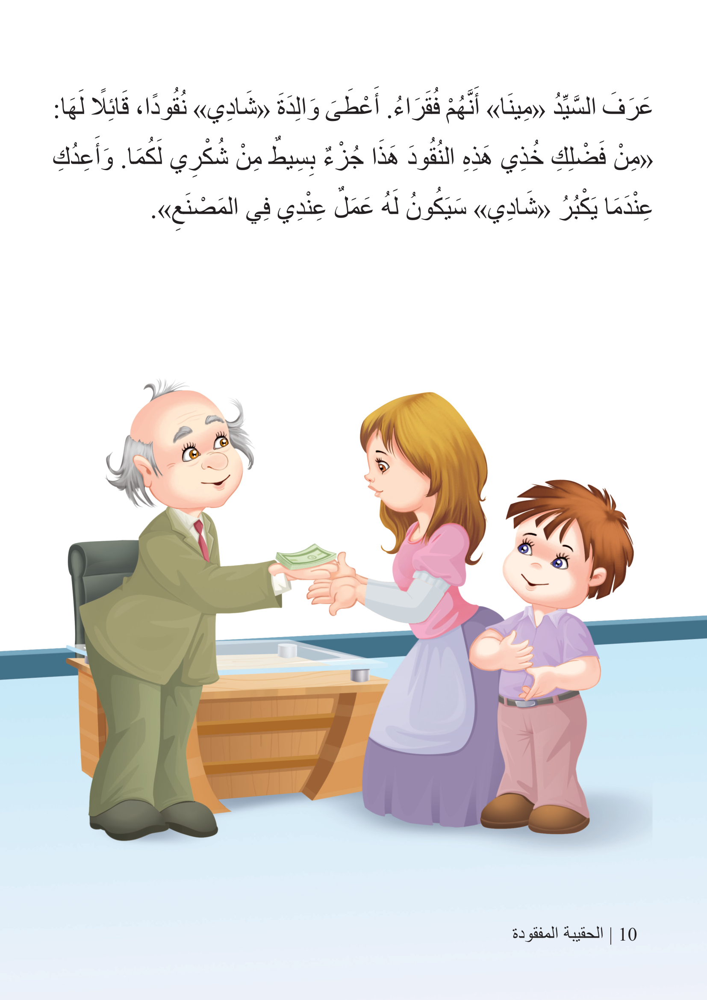
عَرَفَ السَّيِّدُ «مِينَا» أَنَّهُمْ فُقَرَاءُ. أَعْطَى وَالِدَةَ «شَادِي» نُقُودًا، قَائِلًا لَهَا: «مِنْ فَضْلِكِ خُذِي هَذِهِ النُّقُودَ هَذَا جُزْءٌ بَسِيطٌ مِنْ شُكْرِي لَكُمَا. وَأَعِدُكِ عِنْدَمَا يَكْبُرُ «شَادِي» سَيَكُونُ لَهُ عَمَلٌ عِنْدِي فِي المَصْنَعِ».
صفحة 1328 كلمة · نسبة التشكيل 0.76
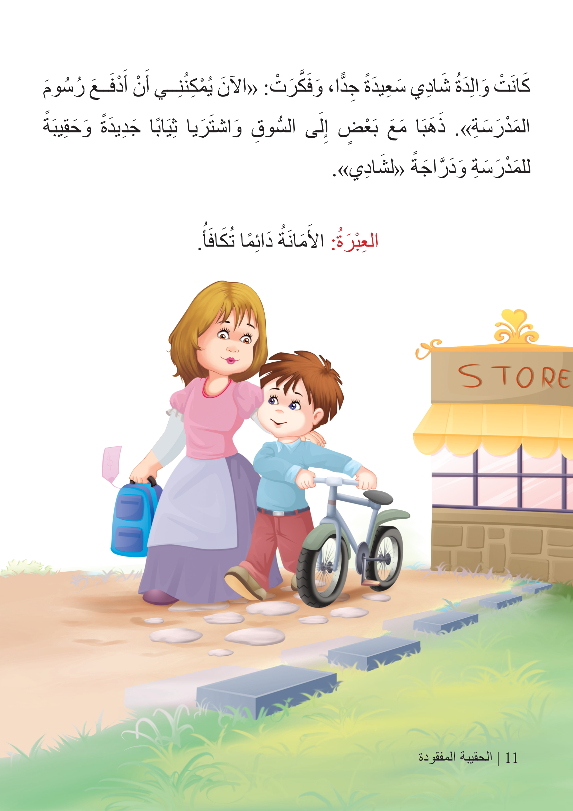
كَانَتْ وَالِدَةُ شَادِي سَعِيدَةً جِدًّا، وَفَكَّرَتْ: «الآنَ يُمْكِنُنِي أَنْ أَدْفَعَ رُسُومَ المَدْرَسَةِ». ذَهَبَا مَعَ بَعْضٍ إِلَى السُّوقِ وَاشْتَرَيَا ثِيَابًا جَدِيدَةً وَحَقِيبَةً لِلمَدْرَسَةِ وَدَرَّاجَةً «لِشَادِي». العِبْرَةُ: الأَمَانَةُ دَائِمًا تُكَافَأُ.
صفحة 1425 كلمة · نسبة التشكيل 0.77
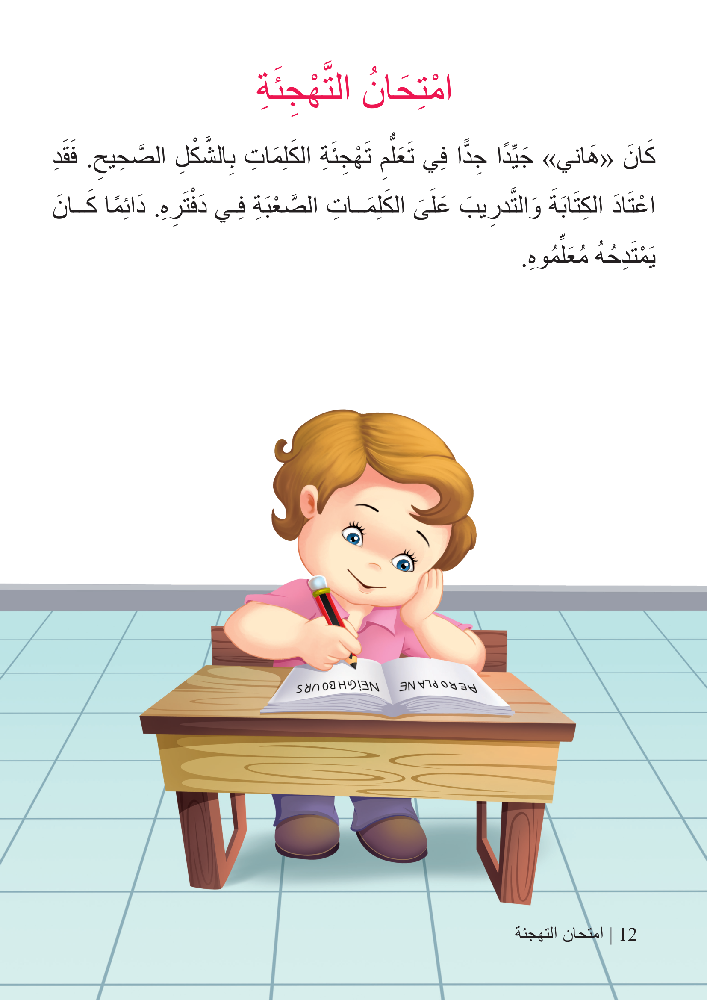
اِمْتِحَانُ التَّهْجِئَةِ كَانَ «هَاني» جَيِّدًا جِدًّا فِي تَعَلُّمِ تَهْجِئَةِ الكَلِمَاتِ بِالشَّكْلِ الصَّحِيحِ. فَقَدِ اعْتَادَ الكِتَابَةَ وَالتَّدْرِيبَ عَلَى الكَلِمَاتِ الصَّعْبَةِ فِي دَفْتَرِهِ. دَائِمًا كَانَ يَمْتَدِحُهُ مُعَلِّمُوهِ.
صفحة 1534 كلمة · نسبة التشكيل 0.72
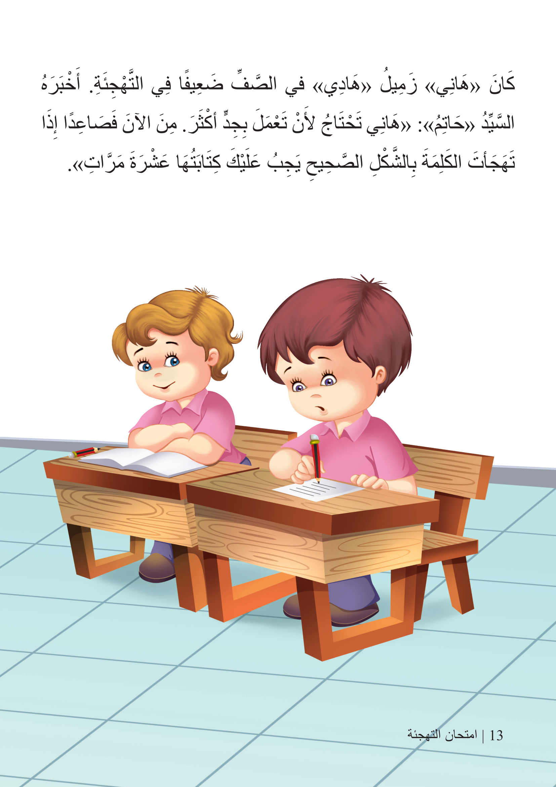
كَانَ «هَانِي» زَمِيلُ «هَادِي» فِي الصَّفِّ ضَعِيفًا فِي التَّهْجِئَةِ. أَخْبَرَهُ السَّيِّدُ «حَاتِمٌ»: «هَانِي تَحْتَاجُ لأَنْ تَعْمَلَ بِجِدٍّ أَكْثَرَ. مِنَ الآنَ فَصَاعِدًا إِذَا تَهَجَّأْتَ الكَلِمَةَ بِالشَّكْلِ الصَّحِيحِ يَجِبُ عَلَيْكَ كِتَابَتُهَا عَشْرَةَ مَرَّاتٍ». | امتحان التهجئة
صفحة 1631 كلمة · نسبة التشكيل 0.70
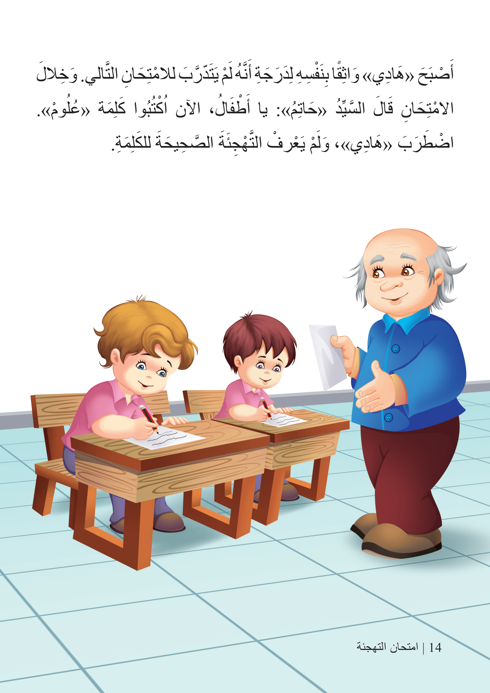
أَصْبَحَ «هَادِي» وَاثِقًا بِنَفْسِهِ لِدَرَجَةِ أَنَّهُ لَمْ يَتَدَرَّبَ لِلامْتِحَانِ التَّالِي. وَخِلالَ الامْتِحَانِ قَالَ السَّيِّدُ «حَاتِمُ»: يَا أَطْفَالُ، الآنَ اكْتُبُوا كَلِمَةَ «عُلُومٌ». اضْطَرَبَ «هَادِي»، وَلَمْ يَعْرِفِ التَّهْجِئَةَ الصَّحِيحَةَ لِلْكَلِمَةِ. | امتحان التهجئة
صفحة 1734 كلمة · نسبة التشكيل 0.80
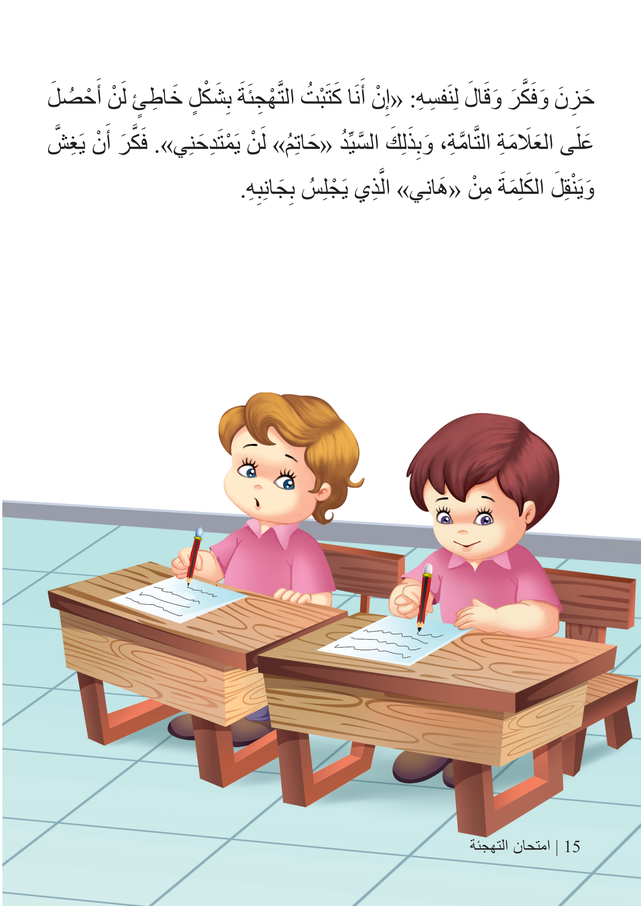
حَزِنَ وَفَكَّرَ وَقَالَ لِنَفْسِهِ: «إِنْ أَنَا كَتَبْتُ التَّهْجِئَةَ بِشَكْلٍ خَاطِئٍ لَنْ أَحْصُلَ عَلَى العَلَامَةِ التَّامَّةِ، وَبِذَلِكَ السَّيِّدُ «حَاتِمٌ» لَنْ يَمْتَدِحَنِي». فَكَّرَ أَنْ يَغُشَّ وَيَنْقُلَ الكَلِمَةَ مِنْ «هَانِي» الَّذِي يَجْلِسُ بِجَانِبِهِ. امتحان التهجئة | 15
صفحة 1846 كلمة · نسبة التشكيل 0.84
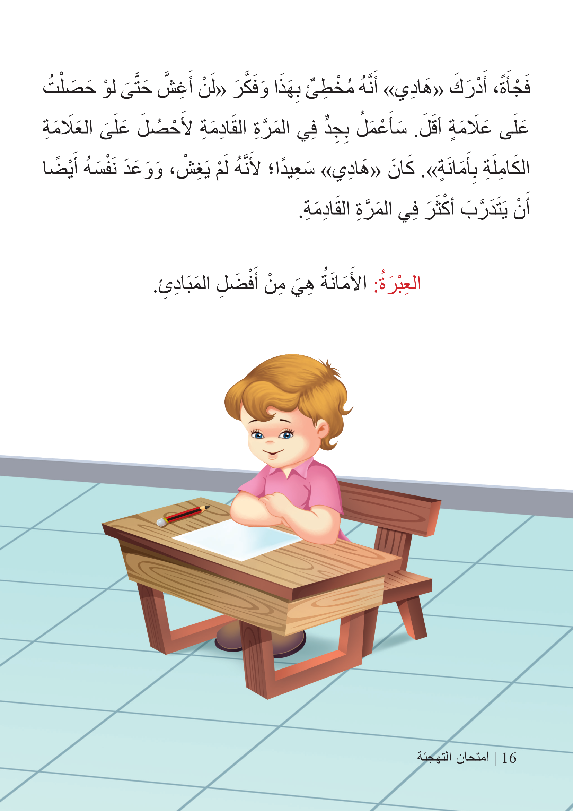
فَجْأَةً، أَدْرَكَ «هَادِي» أَنَّهُ مُخْطِئٌ بِهَذَا وَفَكَّرَ «لَنْ أَغِشَّ حَتَّى لَوْ حَصَلْتُ عَلَى عَلَامَةٍ أَقَلَّ. سَأَعْمَلُ بِجِدٍّ فِي المَرَّةِ القَادِمَةِ لِأَحْصُلَ عَلَى العَلَامَةِ الكَامِلَةِ بِأَمَانَةٍ». كَانَ «هَادِي» سَعِيدًا؛ لِأَنَّهُ لَمْ يَغِشْ، وَوَعَدَ نَفْسَهُ أَيْضًا أَنْ يَتَدَرَّبَ أَكْثَرَ فِي المَرَّةِ القَادِمَةِ. العِبْرَةُ: الأَمَانَةُ هِيَ مِنْ أَفْضَلِ المَبَادِئِ.
صفحة 1930 كلمة · نسبة التشكيل 0.78
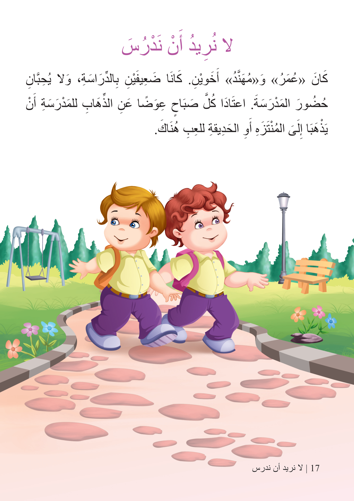
لَا نُرِيدُ أَنْ نَدْرُسَ كَانَ «عُمَرُ» وَ«مُهَنَّدٌ» أَخَوَيْنِ. كَانَا ضَعِيفَيْنِ بِالدِّرَاسَةِ، وَلَا يُحِبَّانِ حُضُورَ المَدْرَسَةِ. اعْتَادَا كُلَّ صَبَاحٍ عِوَضًا عَنِ الذَّهَابِ لِلمَدْرَسَةِ أَنْ يَذْهَبَا إِلَى المُنْتَزَهِ أَوِ الحَدِيقَةِ للعبِ هُنَاكَ.
صفحة 2027 كلمة · نسبة التشكيل 0.74
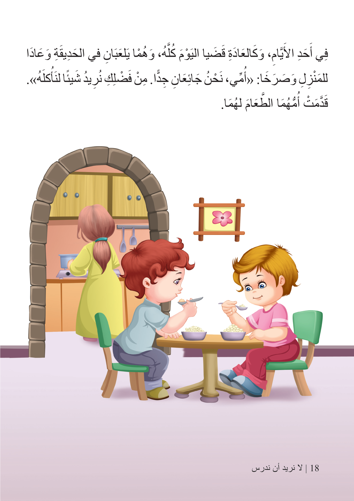
فِي أَحَدِ الأَيَّامِ، وَكَالعَادَةِ قَضَيا اليَوْمَ كُلَّه، وَهُمَا يَلعَبَان فِي الحَدِيقَةِ وَعَادَا للمَنْزِلِ وَصَرَخَا: «أُمِّي، نَحْنُ جَائِعَان جِدًّا. مِنْ فَضْلِكِ نُرِيدُ شَيئًا لِنَأْكُلَهُ». قَدَّمَتْ أُمُّهُمَا الطَّعَامَ لَهُمَا.
صفحة 2130 كلمة · نسبة التشكيل 0.72
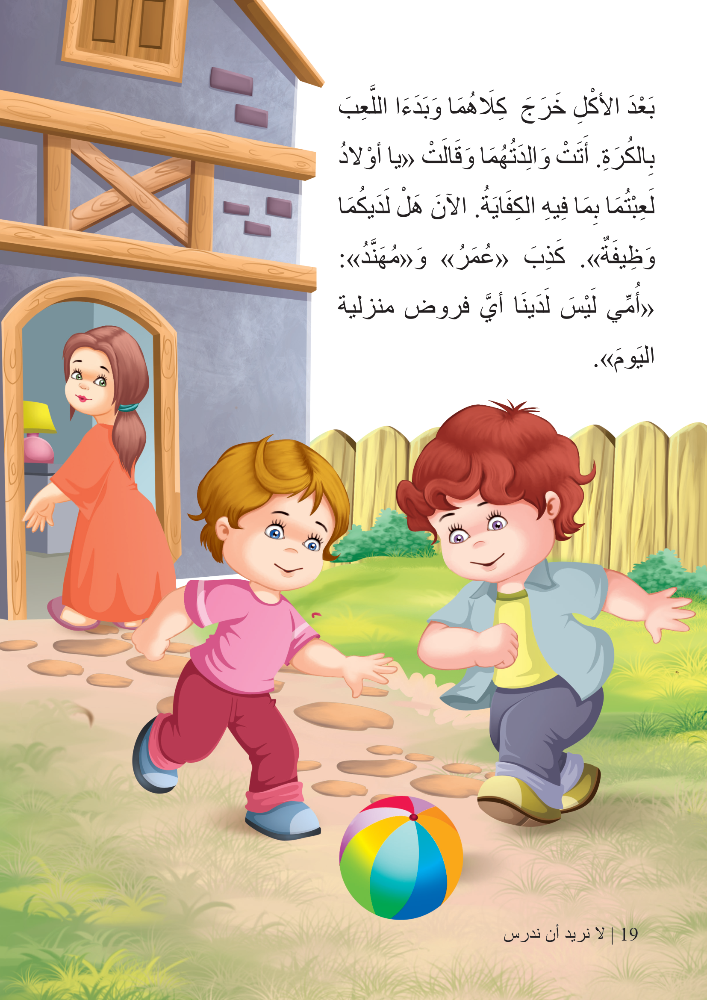
بَعْدَ الأَكْلِ خَرَجَ كِلَاهُمَا وَبَدَءَا اللَّعِبَ بِالكُرَةِ. أَتَتْ وَالِدَتُهُمَا وَقَالَتْ «يَا أَوْلادُ لَعِبْتُمَا بِمَا فِيهِ الكِفَايَةُ. الآنَ هَلْ لَدَيْكُمَا وَظِيفَةٌ». كَذِبَ «عُمَرُ» وَ«مُهَنَّدُ»: «أُمِّي لَيْسَ لَدَيْنَا أَيُّ فروض منزلية اليَومَ».
صفحة 2231 كلمة · نسبة التشكيل 0.79
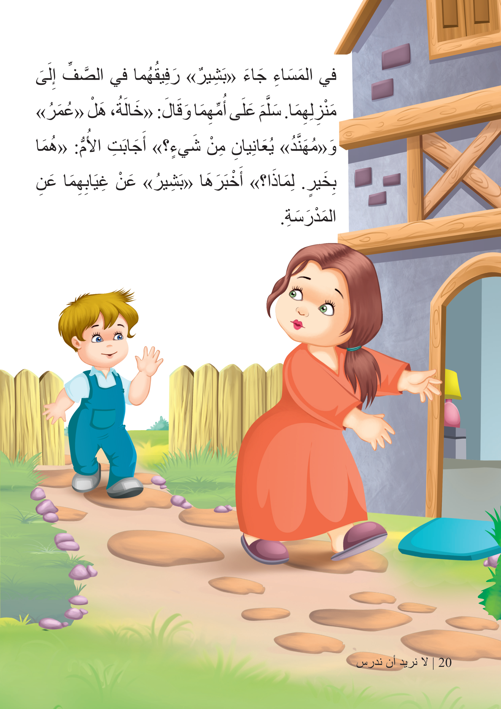
فِي المَسَاءِ جَاءَ «بَشِيرٌ» رَفِيقُهُما فِي الصَّفِّ إِلَى مَنْزِلِهمَا. سَلَّمَ عَلَى أُمِّهِمَا وَقَالَ: «خَالَةُ، هَلْ «عُمَرُ» وَ«مُهَنَّدٌ» يُعَانِيَانِ مِنْ شَيْءٍ؟» أَجَابَتِ الأُمُّ: «هُمَا بِخَيْرٍ. لِمَاذَا؟» أَخْبَرَهَا «بَشِيرٌ» عَنْ غِيَابِهِمَا عَنِ المَدْرَسَةِ.
صفحة 2332 كلمة · نسبة التشكيل 0.83
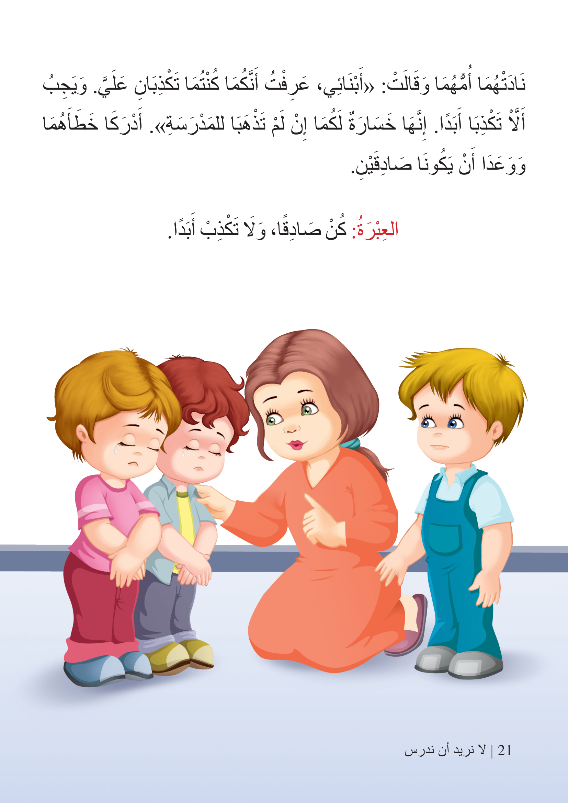
نَادَتْهُمَا أُمُّهُمَا وَقَالَتْ: «أَبْنَائِي، عَرَفْتُ أَنَّكُمَا كُنْتُمَا تَكْذِبَانِ عَلَيَّ. وَيَجِبُ أَلَّا تَكْذِبَا أَبَدًا. إِنَّهَا خَسَارَةٌ لَكُمَا إِنْ لَمْ تَذْهَبَا لِلمَدْرَسَةِ». أَدْرَكَا خَطَأَهُمَا وَوَعَدَا أَنْ يَكُونَا صَادِقَيْنِ. العِبْرَةُ: كُنْ صَادِقًا، وَلَا تَكْذِبْ أَبَدًا.
صفحة 2430 كلمة · نسبة التشكيل 0.74
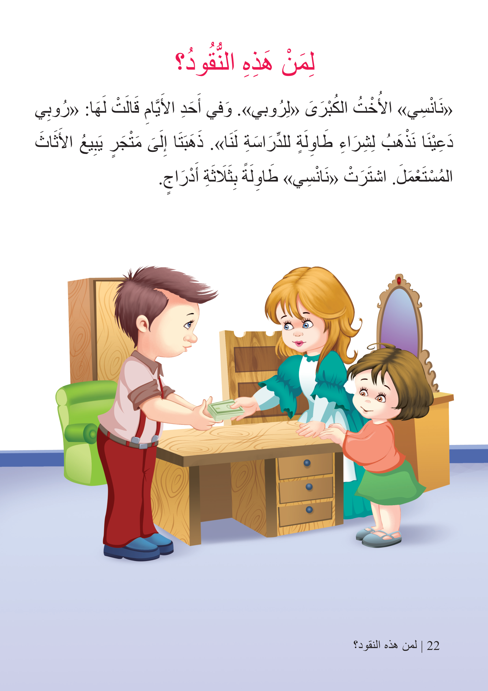
لِمَنْ هَذِهِ النُّقُودُ؟ «نَانْسِي» الأُخْتُ الْكُبْرَى «لِرُوبِي». وَفِي أَحَدِ الأَيَّامِ قَالَتْ لَهَا: «رُوبِي دَعِيْنَا نَذْهَبْ لِشِرَاءِ طَاوِلَةٍ لِلدِّرَاسَةِ لَنَا». ذَهَبَتَا إِلَى مَتْجَرٍ يَبِيعُ الأَثَاثَ المُسْتَعْمَلَ. اشْتَرَتْ «نَانْسِي» طَاوِلَةً بِثَلَاثَةِ أَدْرَاجٍ.
صفحة 2535 كلمة · نسبة التشكيل 0.65
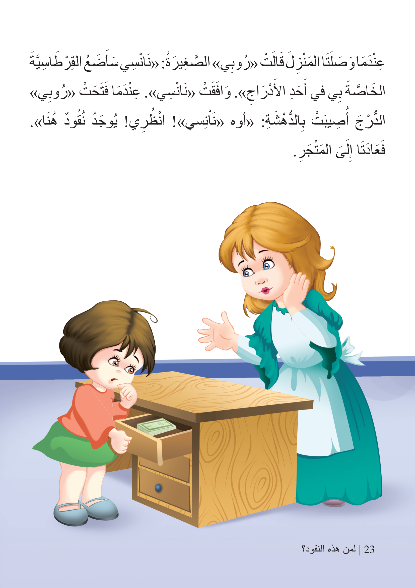
عِنْدَمَا وَصَلَتَا المَنْزِلَ قَالَتْ «رُوبِي» الصَّغِيرَةُ: «نَانْسِي سَأَضَعُ القِرْطَاسِيَّةَ الخَاصَّةَ بِي فِي أَحَدِ الأَدْرَاجِ». وَافَقَتْ «نَانْسِي». عِنْدَمَا فَتَحَتْ «رُوبِي» الدُّرْجَ أُصِيبَتْ بِالدَّهْشَةِ: «أوه «نَانْسِي»! انْظُرِي! يُوجَدُ نُقُودٌ هُنَا». فَعَادَتَا إِلَى المَتْجَرِ. | لمن هذه النقود؟
صفحة 2635 كلمة · نسبة التشكيل 0.76
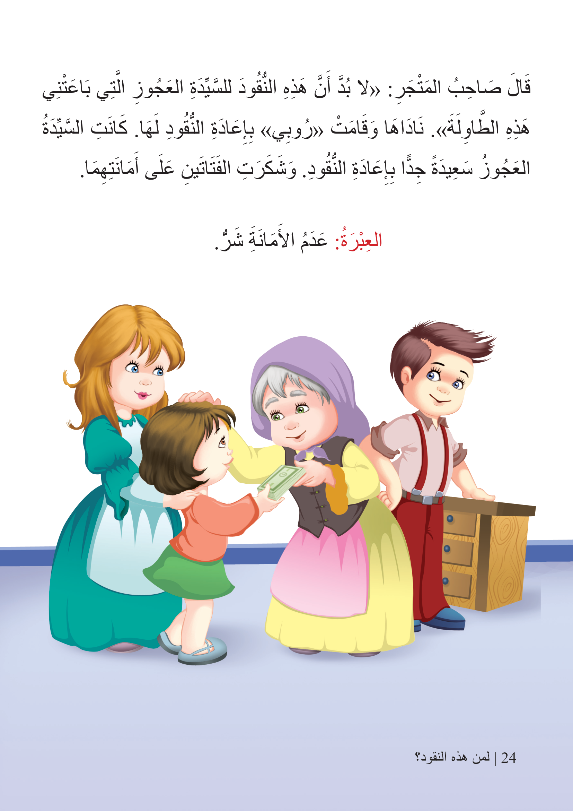
قَالَ صَاحِبُ المَتْجَرِ: «لا بُدَّ أَنَّ هَذِهِ النُّقُودَ لِلسَّيِّدَةِ العَجُوزِ الَّتِي بَاعَتْنِي هَذِهِ الطَّاوِلَةَ». نَادَاهَا وَقَامَتْ «رُوبِي» بِإِعَادَةِ النُّقُودِ لَهَا. كَانَتِ السَّيِّدَةُ العَجُوزُ سَعِيدَةً جِدًّا بِإِعَادَةِ النُّقُودِ. وَشَكَرَتِ الفَتَاتَيْنِ عَلَى أَمَانَتِهِمَا. العِبْرَةُ: عَدَمُ الأَمَانَةِ شَرٌّ.